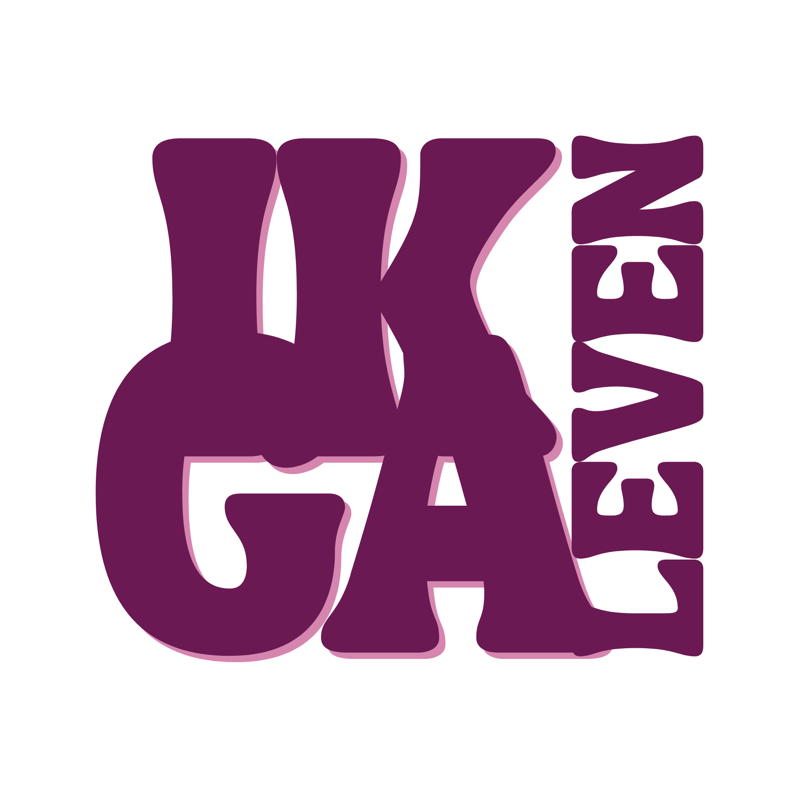
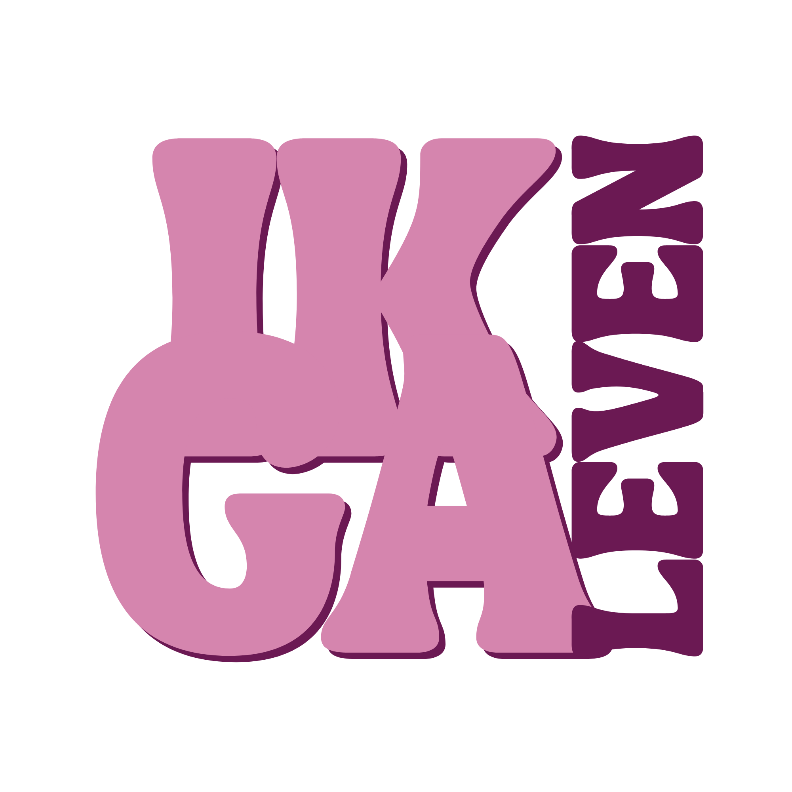
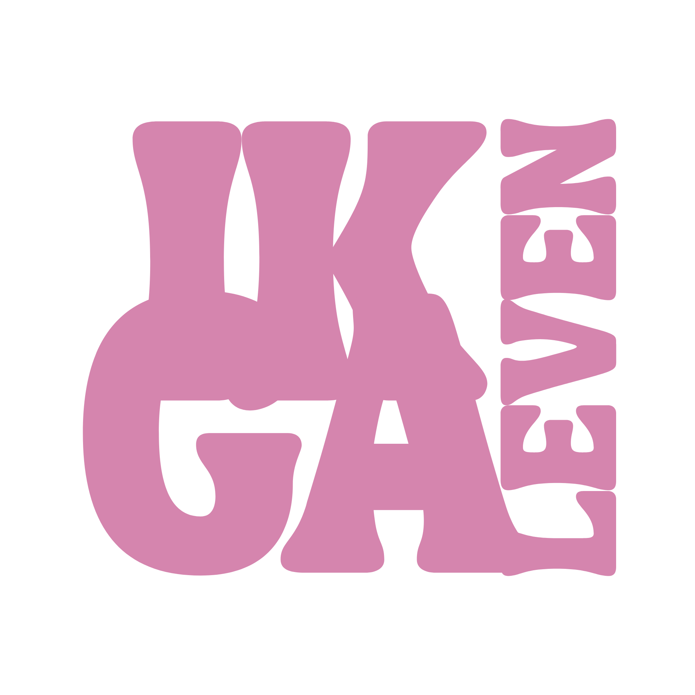

Design system
Levende styleguide — kleuren, typografie, knoppen en secties zoals vastgelegd in ik-ga-leven-design-system.md.


Van geweld naar geluk
In tien weken, in kleine groep, bouw je stap voor stap aan een leven waarin jij weer centraal staat. Er is geen haast — je gaat in jouw eigen tempo, en je mag altijd anoniem blijven.
je gaat leven.
Roos-tint band
Gebruikt voor de opt-in sectie.
Boter band
Lichte, warme afwisseling tussen secties.
Pruim sectie
Voor een enkel dieper, rustgevend blok (bv. slot-CTA).
Schaduw is voorbehouden aan zwevende objecten — hier het ebook-mockup:
Gewone kaarten krijgen geen schaduw, alleen een dunne roos-rand: